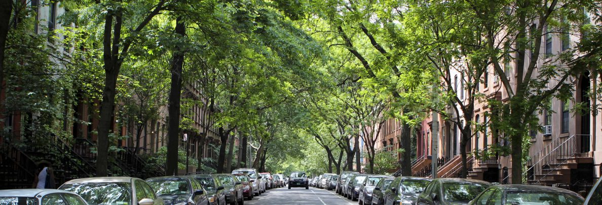
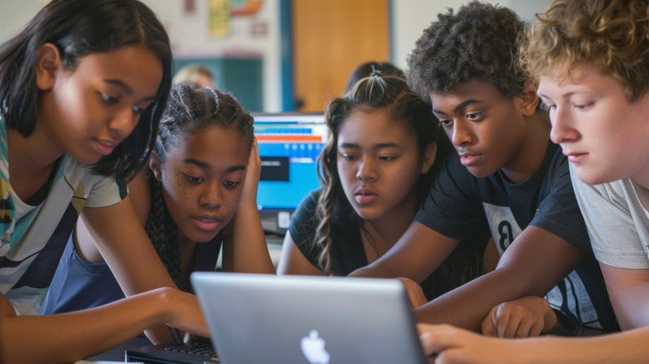
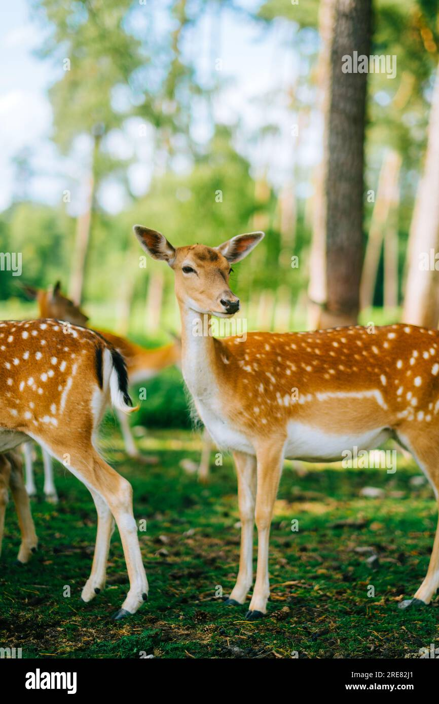
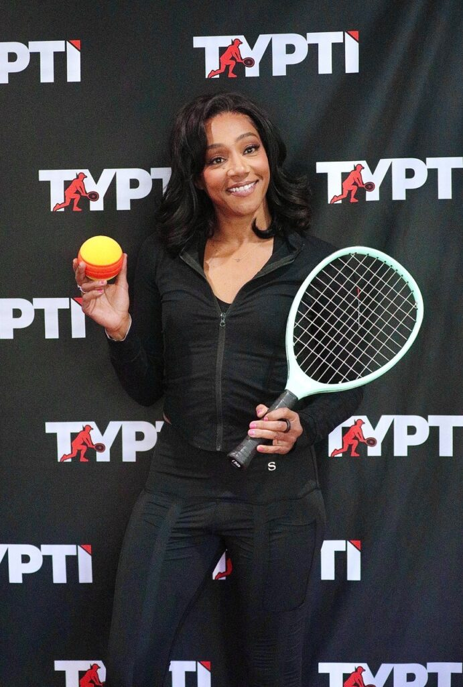
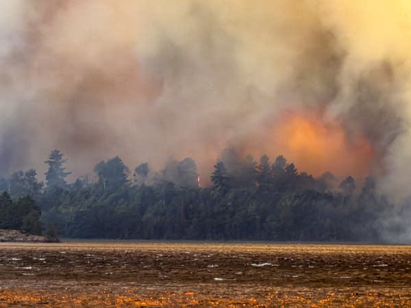
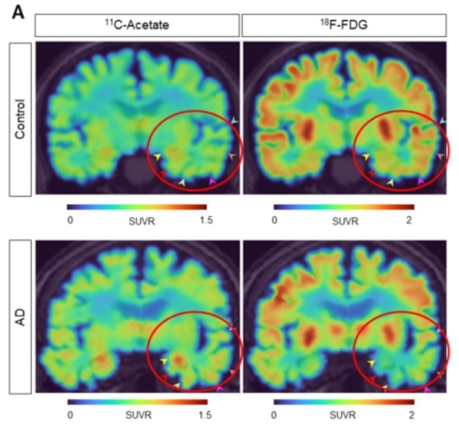
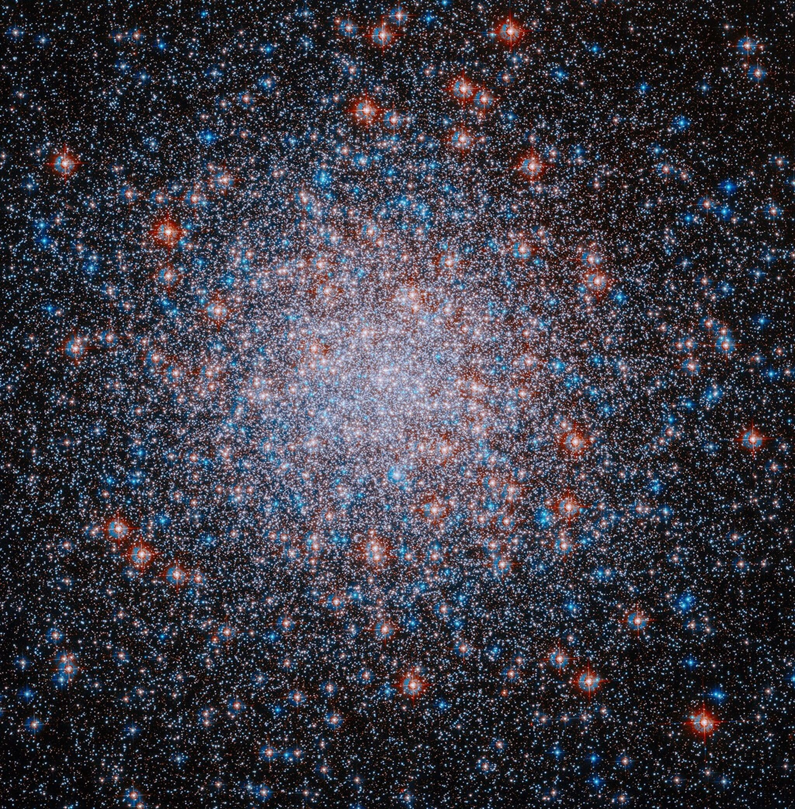
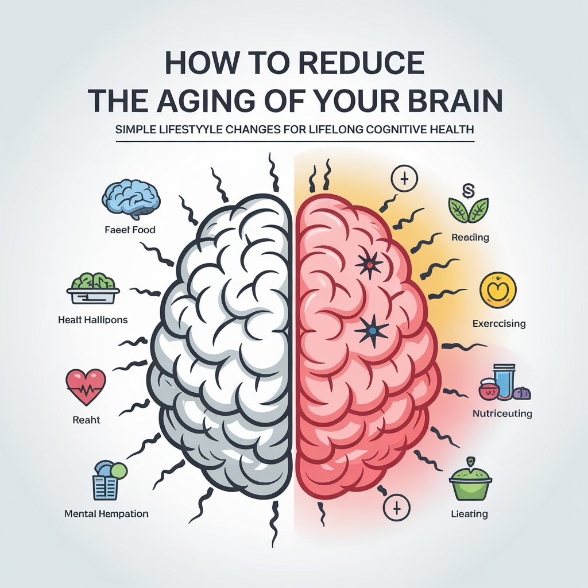

112026 · Sep

为乐趣而读书的孩子，正在越来越少
A growing body of evidence shows reading for pleasure is in steep decline among the young — and the shift may reshape their empathy and focus美英权威调查显示每天为乐趣阅读的儿童比例大幅下滑、男孩尤甚；读小说能培养同理心与持续专注，好习惯其实可以重建。
美英多项权威调查显示，每天为乐趣阅读的儿童比例十余年间大幅下滑，男孩退步尤为明显；读小说能培养同理心与持续专注，好习惯其实可以重建。
开始精读 →
美英权威调查显示每天为乐趣阅读的儿童比例大幅下滑、男孩尤甚；读小说能培养同理心与持续专注，好习惯其实可以重建。

TNC 新闻稿原文：若无城市树木，城市"热岛"热度将翻倍；树冠抵消近半热岛效应，但降温分布不公。

《金融时报》：GLP-1 减肥药是"变瘦累退税"，除最高收入者外药费远超省下的伙食钱，甚至可能为维持用药而负债。

研究追踪 4500 多只动物、约 1180 万个定位点：仅"人类在场"本身就能重塑动物活动，多数哺乳动物与鸟类改变了家域与作息。

每年约 1100 万吨塑料垃圾流入海洋，到 2050 年海洋塑料或超鱼类总量；污染危害海洋生物与人类生计，减少一次性塑料迫在眉睫。
研究显示，优质睡眠是青少年在学业和友谊中表现更好的关键：睡眠质量对成绩与心理的影响超过屏幕时间，周末补觉可显著降低抑郁风险。

阿莉莎·刘 16 岁退役回归普通生活，五年后重返冰面，2026 米兰冬奥会夺得女子单人滑金牌，成为 24 年来首位夺冠的美国选手。

调查显示，AI 热度虽在降温，但学生仍渴望更聪明的学习工具——他们期待 AI 真正提升学习效率，而非华而不实的噱头。

伊比利亚猞猁曾仅存约 62 只，经圈养繁殖、恢复野兔与栖息地保护，2025 年野外回升至 2663 只，从"濒危"降为"易危"。
联合国气象机构警告：极端野火与热浪使实现空气质量目标愈发困难，细颗粒物 PM2.5 与近地面臭氧同呼吸道、心血管疾病密切相关。

极右翼选择党（AfD）在萨克森-安哈尔特州选举中以 43.8% 得票率大胜，距绝对多数仅差三席，或组建二战以来德国首个极右翼州政府。

罗伯·莱纳逝世九个月后，凭《熊家餐馆》获追授艾美奖最佳客串男演员，打破其父保持的 48 年再获奖纪录。

阿尔卡拉斯以 6-4、6-3、6-4 直落三盘击败保罗，晋级美网八强，继续向卫冕之路迈进。
英格兰特殊教育需求计划（EHCP）申请激增，占比或从二十分之一翻倍至十分之一，地方政府预算持续承压。

瑞安航空警告：若油价持续高企，欧洲短途机票价格明年将大幅上涨，部分航空公司或难以为继。

别总拿 20 岁的自己比较、别急着退休、停止焦虑——科学家揭示抵御"认知悬崖"的意外方法。

一项试验性阿尔茨海默病药物将面向无症状者提前用药，尝试在痴呆症状出现前阻止疾病发展。

NASA 新一代旗舰望远镜——南希·格雷丝·罗曼太空望远镜，搭载猎鹰重型火箭升空，开启深空巡天。

OpenAI 宣布 11 月 12 日终止向 AI 编程工具 Cursor 供应模型，起因与其被 SpaceX 收购有关。